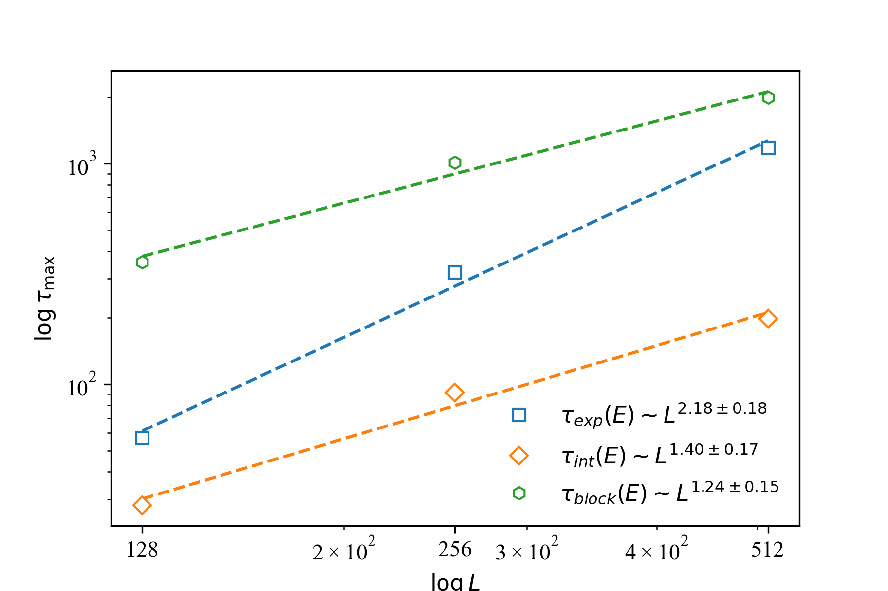
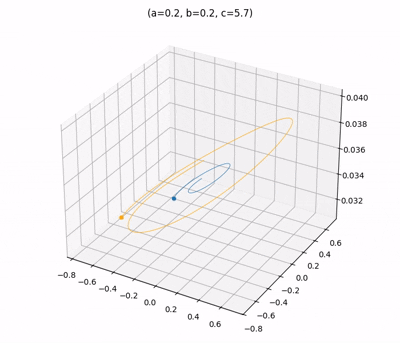
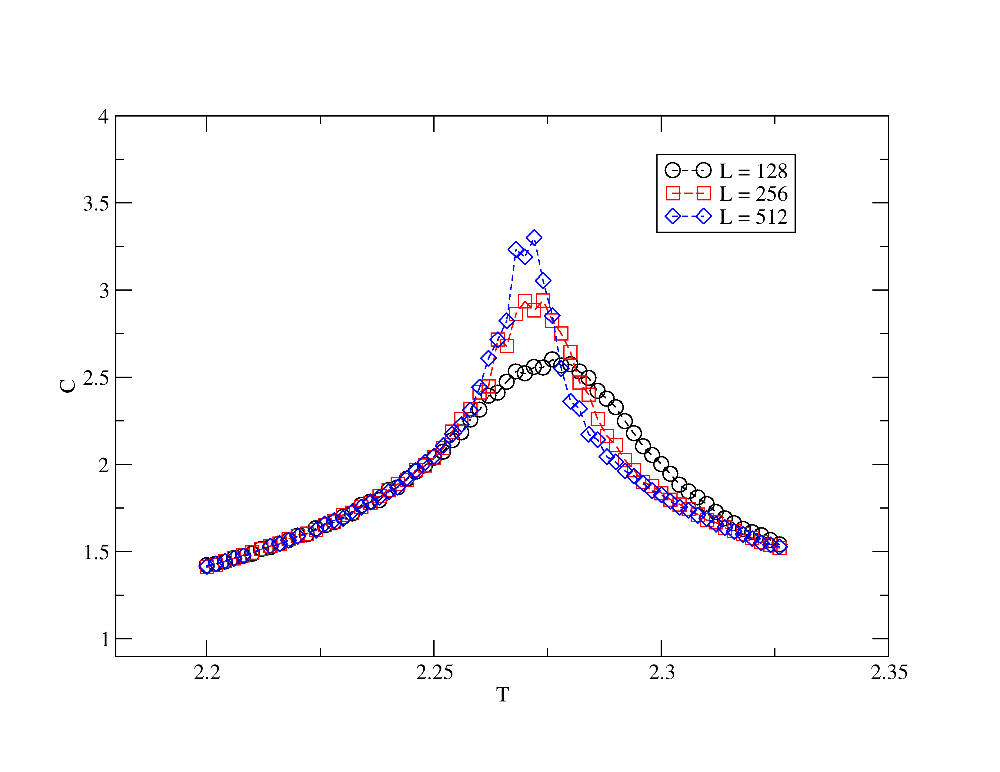
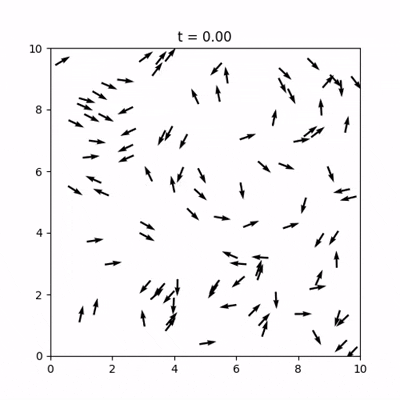
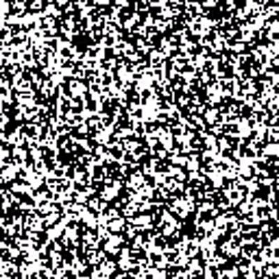

Linhas de pesquisa e trabalhos
Desenvolvi projetos em modelagem computacional com foco na simulação e análise de sistemas complexos, utilizando métodos de Monte Carlo para exploração de fenômenos emergentes. Implementei soluções em C para simulações do modelo de Ising com interações de segunda vizinhança, realizando análise de métricas como energia, magnetização e correlações espaciais.
Para ganho de desempenho e escalabilidade, utilizei paralelização com MPI e técnicas como Parallel Tempering, otimizando a exploração do espaço de estados e reduzindo custos computacionais em simulações intensivas.
Também atuei na etapa de análise de dados, utilizando Python (NumPy, Pandas e Matplotlib) para processamento, visualização e extração de insights a partir dos resultados gerados. Possuo experiência na aplicação de métodos numéricos e modelagem de sistemas dinâmicos, com forte base em resolução de problemas complexos, otimização e computação científica.






Transição para Data Science
Buscando expandir minha atuação para além da física, iniciei minha transição para a área de
Ciência de Dados, aplicando conceitos estatísticos e computacionais na análise de dados reais.
Durante esse processo, desenvolvi projetos envolvendo manipulação, armazenamento e análise de dados,
utilizando ferramentas como Python e bancos de dados relacionais. Trabalhei com organização de dados,
consultas estruturadas e construção de análises exploratórias.
Também explorei técnicas de visualização e interpretação de dados, buscando extrair padrões e insights
relevantes a partir de diferentes conjuntos de dados.
Essa transição representa não apenas uma mudança de área, mas a continuidade natural do meu trabalho
com modelagem, análise e interpretação de sistemas complexos.